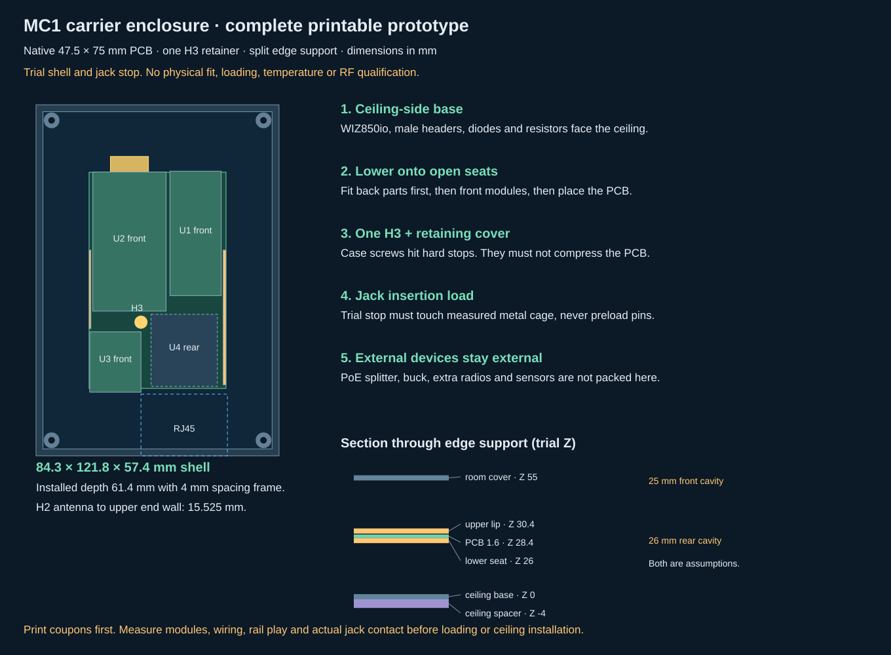
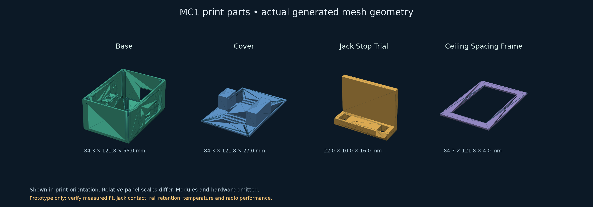

← MC1 carrier · Assembly and release measurements · Trial dimensions


Printable carrier-only prototype: base STL · cover STL · trial jack stop STL · ceiling frame STL · assembled CAD preview. Read the assembly document before printing. Native XY is checked; module Z, cable bends, rail fit and jack restraint remain unmeasured.